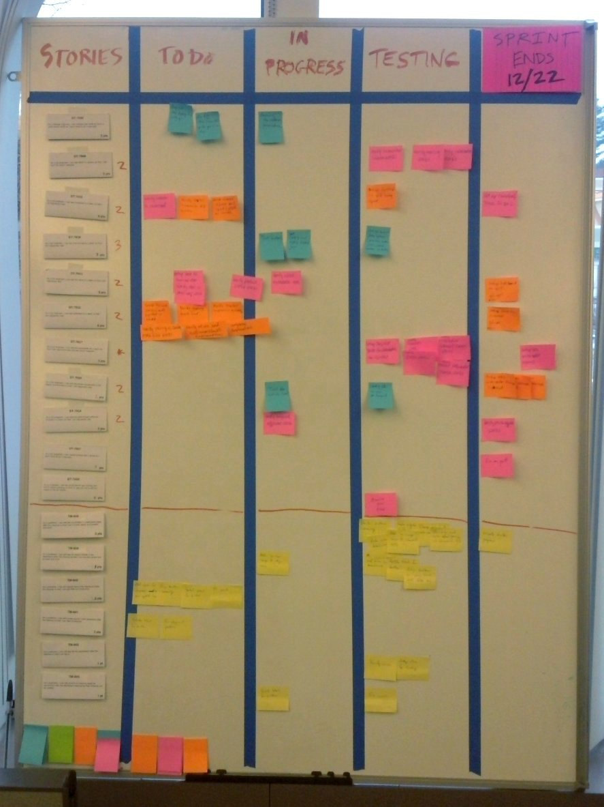

The introduce of
JIRA
By Tony Mao
Question 1
在项目 需求分析会议 中，你是否还在使用 纸和笔 记录用户提出的需求吗？

Question 2
在项目 规划 阶段，你是否还在使用 黑板笔或便条贴 规划项目的各个阶段吗？
 

Do U Konw ?
Apple

Microsoft

Google
You must to know  JIRA
JIRA
by positioning, rotating and scaling them on an infinite canvas
the only limit is your imagination
want to know more?
use the source, Luke!
one more thing...
have you noticed it's in 3D*?
* beat that, prezi ;)